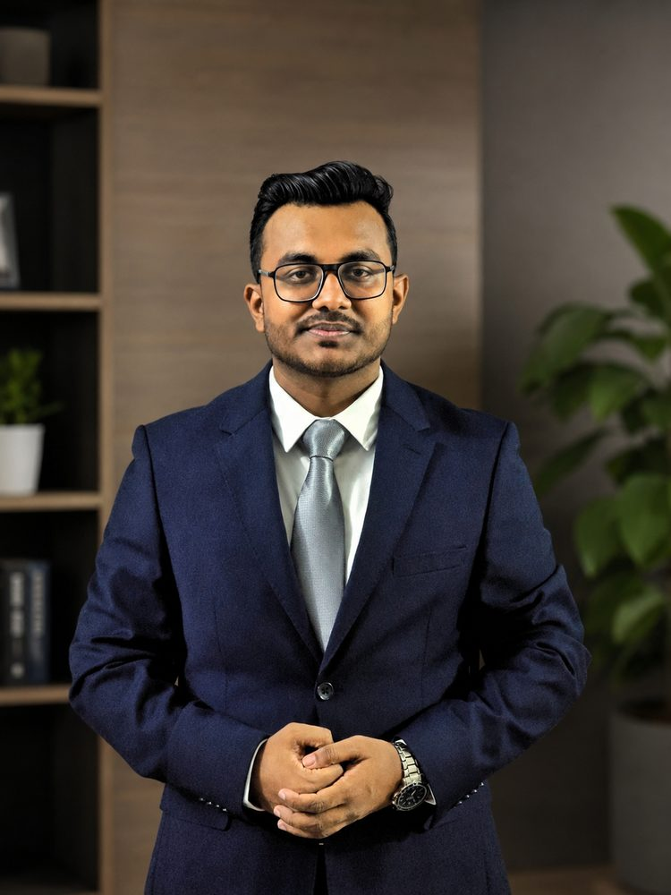

Building intelligent perception systems for aerial platforms — from multimodal sensor fusion under degraded conditions to multi-UAV swarm architectures and wildfire detection. PhD researcher at Deakin University's IISRI, Australia. Aeronautical Engineer. AIAA DBF international competition team leader.
Deakin University Postgraduate Research Scholarship (DUPRS) Recipient · 2026
I'm a PhD candidate at the Institute for Intelligent Systems Research and Innovation (IISRI), Deakin University, fully funded by the DUPRS scholarship. My doctoral research develops lightweight, edge-deployable multimodal fusion for real-time UAV perception that stays robust when sensor streams are absent or degraded — a critical challenge for aerial platforms operating in the wild.
I hold a B.Sc. in Aeronautical Engineering from MIST, Dhaka, graduating 1st of 35 students (CGPA 3.81/4.00). My undergraduate thesis — a master–slave drone swarm with onboard AI and Wi-Fi networking — earned a BDT 468,000 R&D grant. I competed in AIAA Design/Build/Fly internationally twice: as team member in 2024 (Wichita, KS) and as team leader in 2025 (Tucson, AZ — 39th of 112 teams).
I'm an IEEE Young Professional, AIAA Student Member, and RAeS Student Affiliate. Currently serving as Secretary of Deakin University's IEEE Student Branch (2026).
Engineering work across AI research, UAV systems, and international competition aircraft. Each card links to an in-depth case study with photos, technical details, and outcomes.
Scholarships, research grants, and competition recognitions across doctoral and undergraduate work.
Peer-reviewed conference papers. A Read Paper ↗ button opens the publisher page (DOI); purple tags link to the originating project. Full record on ORCID ↗.
Technical competencies spanning AI research, aerospace engineering, embedded systems, and edge deployment.
Research, teaching, and industry positions held throughout my academic journey.
Student leadership, professional service, and competition roles spanning undergraduate and doctoral studies.
Open to research collaborations, conference invitations, and technical discussions on aerial robotics, autonomous perception, and UAV systems.